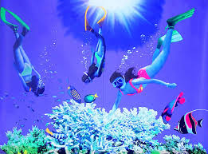

Jak prawidłowo dać nura
Nurkowanie – przebywanie pod wodą przy wykorzystaniu odpowiedniego sprzętu lub na tzw. zatrzymanym oddechu (freediving), w celach rekreacyjnych, sportowych, naukowych, technicznych, ratunkowych lub militarnych. Nurkowanie ze sprzętem (ang. scuba diving) oraz nurkowanie na zatrzymanym oddechu jest zaliczane do sportów ekstremalnych. Nurkowanie na tzw. zatrzymanym oddechu polega na zanurzeniu się na pewną głębokość bez możliwości oddychania pod wodą. Podstawowym sprzętem jest tzw. sprzęt ABC (maska, fajka, płetwy), zestaw umożliwiający tzw. snorkeling.
